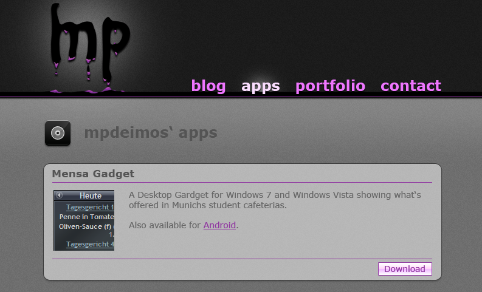
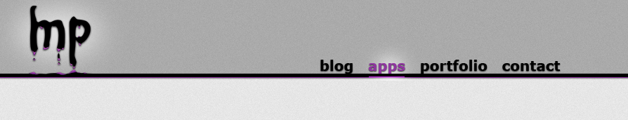

I was a bit too optimistic when I announced the “Beta Launch” of this site – almost 8 years ago! Since then I had several ideas of blog posts and content to put on the site, but simply never found the time to finish it. Until now! I decided to start all over a again and can finally announce the “first” (not final!) release of my personal place on the web.
A bit of history
As mentioned in the post regarding the beta launch, I’ve already spent some time on the concept of this site in 2011. I’ve iterated through several blog/website engines like “code my own” or Wordpress, but finally ended up with Jekyll. The mistake I’ve made was that I decided to build the Jekyll theme and thus also the blog and content engine on my own. I was at a stage where most of the stuff was finished but still had rough edges here and there.
At the time I was also busy with university, the startup Songpier, which I was part of, and last but not least the Winamp for Android app. Finishing the website was just not my top prio at that time.
The hiatus
Somewhen in 2014 I’ve decided to take all content off and just place my Twitter feed and link to social accounts (like LinkedIn and Strava) on the site until I find time to finish it.
The result was rather bold and looked like this:

In the meantime I posted tech-savvy posts on my company’s blog, so the immediate need for a personal blog was no longer given. Still, I had ideas for more controversial or personal posts that did not fit on the company blog.
The relaunch
In 2019 I decided to increase my priority for the website as I have lots of time while working on my “vacation-backlog”. Soon I decided that using the old markup and stylesheets will not play ball as Jekyll has seen several new releases with breaking changes. I also did not want to lose momentum by migrating these or even starting on a green field. So it was pretty clear that I wanted to use an existing theme for Jekyll. I evaluated several themes but have finally chosen So Simple by Michael Rose. It’s a very basic theme and turned out to be quite customizable with CSS.
As next step I changed a few bits and pieces regarding the theme to make it fitting my personal taste and started to migrate content step by step from the old site. It also turned out that the folks behind Jekyll decided to ditch the Textile markup support, so I had to migrate the posts to Markdown as well – don’t ask me why I’ve chosen Textile a few years (or better a decade) back… I also cross-linked the posts on my company blog to bridge the gap between the old content and today.
The result
Roughly three months later—at the end of my vacation period—I am done with the first iteration. The site features all old blog posts, an up-to-date bio and also some required legal information. In addition I’ve added SSL encryption and changed the primary domain from mpdeimos.com to the more professional looking martinpoehlmann.com.
The time for a relaunch is finally there!
I also have some new posts in the pipeline that I’ll release step by step. Of course a project or portfolio section is planned as well, but putting these pieces together might take some additional time…
Some early mockups
For your viewing pleasure I want to share some early mockups of the site. Btw, the very first mockup (pre-2010) already had a “dark-mode” :)


vacation backlog martinpoehlmann.com